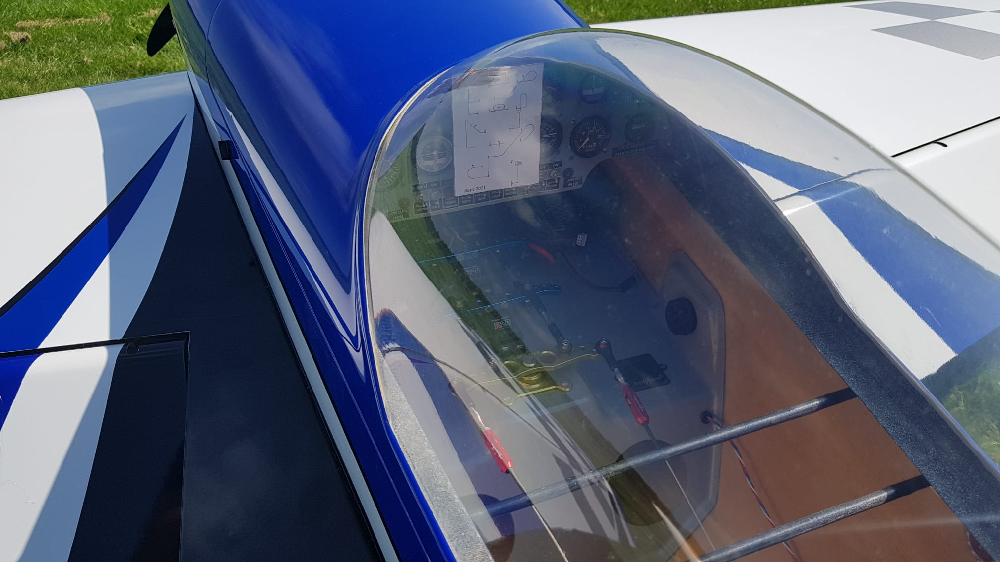

Welkom op mijn website, Pagina 2
Verkenner
Naar Homepage
Contact
Diverse links
IMAC / F3A-X- Nederland/ Benelux
krill-model.com
Enkele gegevens

Extra 330sc 35% van Krill
Spanwijdte: 2,70m
Lengte romp: 2,60m
Gewicht:14kg
Motor: DLE, 111cc
Schaal: 1.3